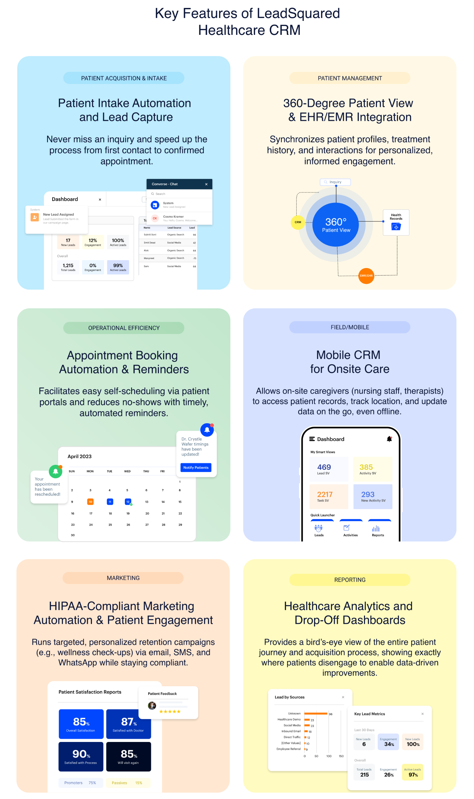
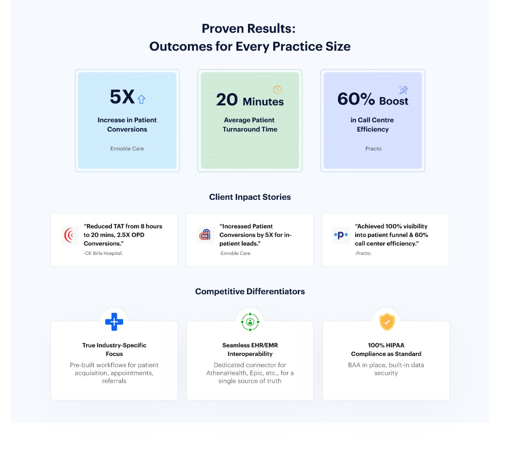
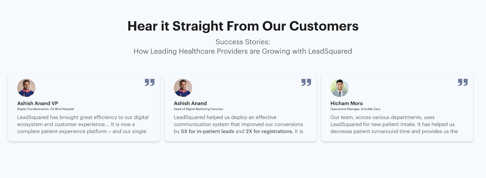
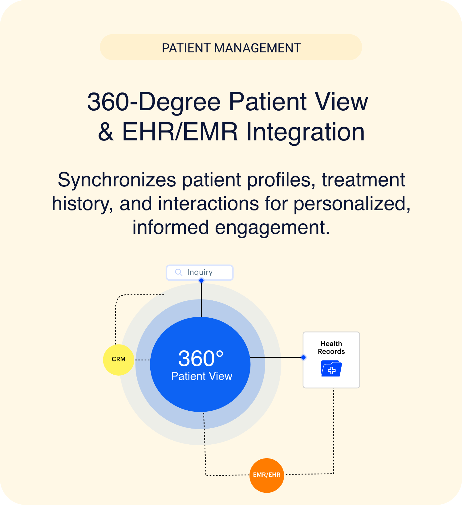
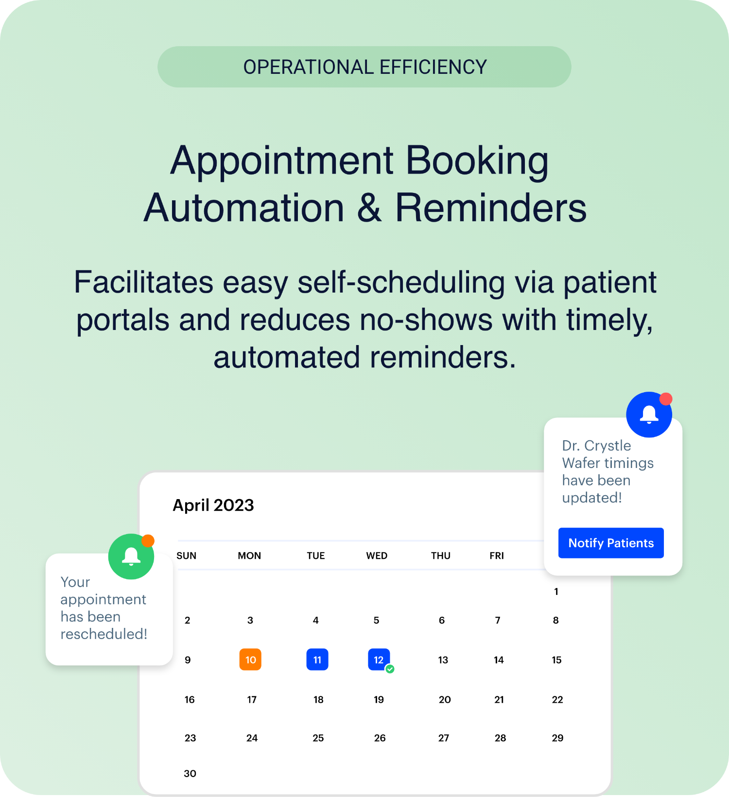
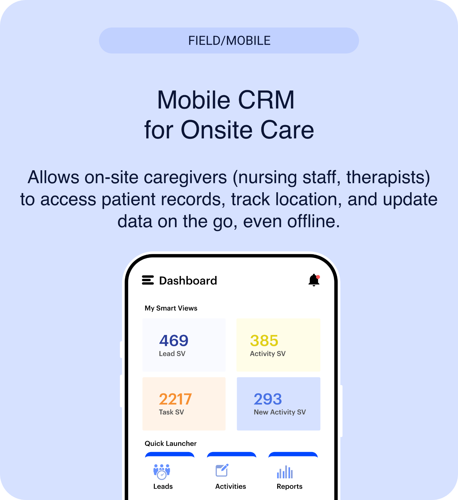
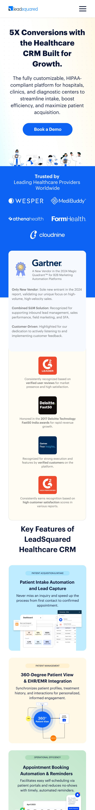
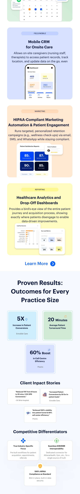

A landing page for hospitals, clinics, and diagnostic chains, designed to turn a cautious first visit into a booked demo.
LeadSquared's Healthcare CRM does a lot, intake, appointments, EHR/EMR integration, marketing automation, analytics. But the hard part was never the feature list. It was making a hospital decision-maker feel the platform is built for healthcare, safe to adopt, and worth a conversation.
So I leaned on storytelling and structure: open with a real outcome, back it with proof people already trust, keep every feature easy to skim, and point all of it at one ask.
I went through LeadSquared and competitors, Salesforce Health, Zoho, Freshworks, to learn the tone and conventions of healthcare SaaS.
Sketched a low-fi layout to settle the content order and hierarchy before touching any visuals.
Designed in Adobe XD around a clean, brand-led type and colour system that simply reads as trustworthy.
Linked the screens into a clickable flow to walk the path the way a real visitor would.
Re-flowed every section for mobile without losing the single-CTA path.
The goal was simple: get the right people, Heads of Patient Experience and Marketing Directors, to book a demo. Each section nudges them one step closer, from the first promise to the final click.
A hero that opens with one number worth caring about, 5X conversions.
A trusted-by bar and HIPAA assurance to ease the natural “can I trust this?” doubt.
The features that answer the audience's real pain points, integration, compliance, mobile care.
Client stories and testimonials that back up everything claimed above.
One clear, high-contrast CTA to finish the job.
Three tensions shaped the brief. Each one led to a specific design call, and the outcome I wanted it to land.
In a HIPAA-regulated world, hospital buyers don't take chances on an unproven platform.
Put Gartner and G2 recognition, plus HIPAA assurance, right after the hero.
Doubt eases early, so starting a conversation feels low-risk.
Six overlapping modules could overwhelm a first-time visitor and bury the value.
Colour-coded feature cards, each with a real screenshot, in a steady two-column rhythm.
A complex platform that reads as a handful of clear capabilities.
Scattered, competing CTAs would split attention across the page.
A single “Book a Demo” CTA anchors every section, top to bottom.
Every section points at the same goal.
Six jobs came up again and again in research, and they shaped which capabilities the page leads with.
Reach patients on their channel, consistently and on time.
Self-scheduling, reminders, and fewer no-shows.
Capture every inquiry and follow it to a booked visit.
One dashboard for the full patient journey and drop-off.
Workflows that run intake and outreach without manual work.
HIPAA-grade security patients and providers can trust.
I wireframed the full page first to lock the order, hero, trusted-by, awards, features, proof, so every visual choice later served the funnel instead of fighting it.
Headline, sub-head, one CTA above the fold. The promise lands first.
A logo bar and analyst badges ease doubt right after the hero.
A 2 + 3 card rhythm lets a multi-feature product breathe.
Client stories and outcomes sit near the close, where buyer doubt peaks.
The single “Book a Demo” ask repeats one last time before the footer.
Each screen earns its place in the funnel: from promise, to proof, to a single action.
The fold opens on one result, “5X conversions,” next to a single CTA. No feature dump, just the promise and the way to a demo.
Gartner and G2 recognition sit high on the page. In a cautious, regulated category, proof from names people already trust makes a new vendor feel safe.

Colour-coded cards break the platform into modules you can skim, each with a real screenshot, so the capability is shown, not just claimed.

Three plain-language cards turn the platform into business impact, conversion lift, faster turnaround, a leaner call centre.
Healthcare-specific fields, EHR/EMR interoperability, and HIPAA by default answer the “why not a generic CRM?” question head-on.
Every section ends on the same ask, book a demo. Sticking to one CTA keeps attention from leaking away.

Real, named voices from healthcare teams, VP, marketing, operations, make the claims above feel earned, not just asserted.



Every section re-flows for small screens without losing the hierarchy, the imagery, or the single-CTA path.


This was a three-day exercise, so nothing here was shipped or measured. These are conceptual outcomes, shown to demonstrate the potential business impact the page is built to drive.
A focused, single-CTA funnel keeps people pointed at one thing, booking a demo.
Smart routing and automated intake shorten patient turnaround time.
Workflow automation lifts call-centre and operational efficiency.
Opening on a real outcome and backing it with analyst proof made a big product feel ambitious and believable at once. Sticking to one CTA kept the whole page pointed at a single decision.
The tricky part was showing six overlapping modules without burying the reader. Colour-coding and a steady card rhythm did more for clarity than dense paragraphs ever could.
Given more time, I'd test the outcome-led hero against a calmer, more empathetic one, and design the demo form itself so the funnel actually closes.
In a cautious, regulated space, a concrete outcome backed by outside proof earns far more trust than a soft, feature-first opener.